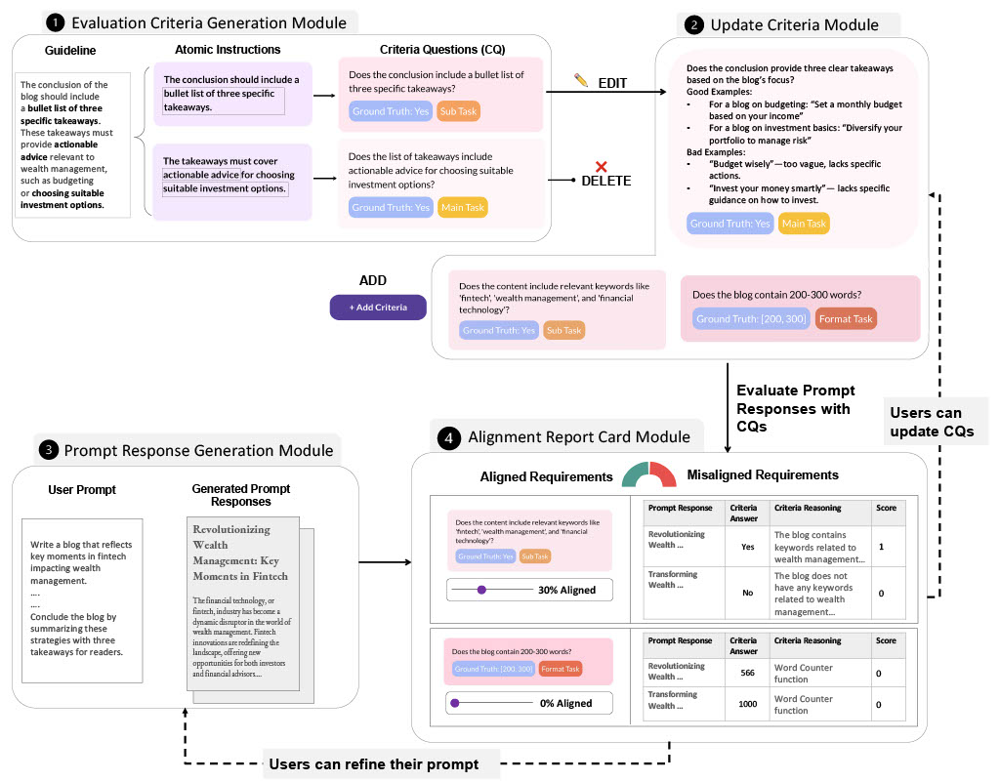

CoPrompter🚀 for Prompt Engineering
Ensuring large language models' (LLMs) responses align with prompt instructions is crucial for application development. Based on our formative study with industry professionals, the alignment requires heavy human involvement and tedious trial-and-error especially when there are many instructions in the prompt. To address these challenges, we introduce CoPrompter, a framework that identifies misalignment based on assessing multiple LLM responses with criteria. It proposes a method to generate evaluation criteria questions derived directly from prompt requirements and an interface to turn these questions into a user-editable checklist. ✨ Our user study with industry prompt engineers shows that CoPrompter improves the ability to identify and refine instruction alignment with prompt requirements over traditional methods, helps them understand where and how frequently models fail to follow user's prompt requirements, and aids in clarifying their own requirements, giving them greater control over the response evaluation process. 🔍 We also present the design lessons to underscore our system's potential to streamline the prompt engineering process. 🚀
System Architecture
The CoPrompter system workflow begins with (1) the Evaluation Criteria Generation Module, where user prompt requirements (guidelines) are broken down into atomic instructions. These instructions are then formulated as criteria questions (CQs) with ground truth labels and metadata tags (e.g., main task, subtask, or format-related). ✨
Users can adjust these criteria in (2) the Update Criteria Module by editing, deleting, or adding new CQs.
Next, in (3) the Prompt Response Generation Module, users input their prompt, select an LLM, and generate responses. 📝 The responses are evaluated against the defined criteria, with results displayed in (4) the Alignment Report Card Module.
This report shows aligned and misaligned requirements, allowing users to explore misalignments in detail. 📊 Based on the feedback, users can refine their prompt or criteria, iterating as needed to improve alignment. 🔄